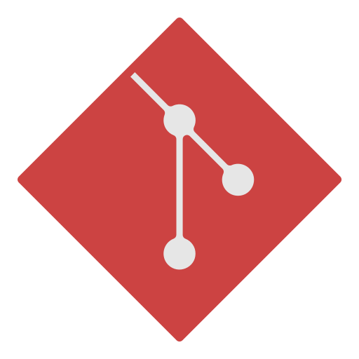

Luiz H. Consolmagno

Senior Software Engineer | DevOps Engineer | Senior Full-Stack Developer

About Me
Software & DevOps Engineer | Automation, Security & Innovation Expert
I am a passionate Software and DevOps Engineer with over 15 years of experience in developing software systems for
diverse environments, including industrial automation, enterprise solutions, smart home technology, and gaming.
Throughout my career, I have specialized in designing and managing advanced security, automation, and control
systems, working across industries such as industrial automation, home automation, and business management
systems for bars, restaurants, and fast-food chains.
My expertise spans from developing PLC (Programmable Logic Controller) solutions to building complex systems using
Python, PHP, C, JAVA, and modern high-level automation languages. I have a strong background in technical design,
software development, DevOps engineering, and CI/CD pipelines, with a relentless focus on process improvement and
software deployment optimization. I am proficient in working with major repositories and release management tools
such as GitHub, GitLab, and Bitbucket.
I have extensive experience integrating security systems like Hikvision and worker safety solutions for tunnel
operations, such as Blueup, leading the implementation of access control technologies and real-time monitoring
solutions. My goal is to ensure efficient, secure, and easy-to-manage systems. With a results-driven approach and
strong problem-solving skills, I deliver innovative, high-impact solutions.
I firmly believe that true innovation stems from collaboration between development and operations teams. My passion
for continuous learning fuels my growth, allowing me to tackle new challenges and implement cutting-edge
technological solutions.
I am always seeking new ways to leverage my expertise to create safer, more efficient, and technologically advanced
environments.
My ultimate goal? To deliver meaningful products and high-quality code.

Work Experience
HIGHLY SKILLED SOFTWARE ENGINEER | ADVANCED SECURITY & AUTOMATION SYSTEMS EXPERT
Green Solutions srl | Gruppo VGS · Full-timeGreen Solutions srl | Gruppo VGS · Full-time
Sep 2024 - Mar 2025
Trecchina, Basilicata, Italy · HybridTrecchina, Basilicata, Italy · Hybrid
Experienced Software Engineer specializing in the development and management of advanced security and
automation systems for tunnel environments, mining operations, and industrial sectors. Proficient in Programmable
Logic Controller (PLC) programming (Controllino, Omron, Schneider) and strong expertise in Python, PHP, and C.
Specialized in tunnel safety systems, including gas, fire, and flood alarms, as well as advanced worker safety
features such as real-time tracking and access control. Skilled in designing intuitive user interfaces for workers,
automating authority notifications, and managing fully automated tunnel construction systems spanning over 30
km.
Key Expertise:
✔ Security System Integration – Hikvision surveillance, Blueup & Trexon TAG/BADGE access control
✔ Software Project Management – Documentation, implementation, and seamless server-automation integration
✔ Tunnel Infrastructure Management – Internal server setup, camera & fiber optic wiring, robotic device
optimization
✔ API & Data Handling – JSON integration, Linux server management (GNU/Linux) for industrial automation
With over 30 km of fully automated tunnels under my supervision, I bring hands-on expertise in:
• Robotics & tunnel automation
• Safety system integration
• Automated emergency alerts to authorities
Skills: SQL · Teamwork · Software Documentation · Web Project Management · Software Industry · Automation · Debugging · Bash · MongoDB · Linux Server · English · Schneider · PHP · Software Project Management · Java · Linux · Building Automation Systems (BAS) · Ubuntu · PLC Programming · MySQL · Italiano · hikvision · JSON · Symfony Framework · Programmable Logic Controller (PLC) · Software Development · GNU/Linux · Git · Resolução de problemas · Flask · Microsoft Visual Studio · C (Programming Language) · Front-End Development
BUSINESS AUTOMATION SPECIALIST | SALES & PRODUCTION OPTIMIZATION
SIRMEC s.r.l. · ContractSIRMEC s.r.l. · Contract
Jan 2024 - Jul 2024
Senise, Basilicata, Italy · On-site
Specializing in enterprise process automation with a proven track record of developing integrated solutions
that bridge sales, production, and logistics operations. My work focuses on creating intelligent systems that
eliminate manual bottlenecks and drive operational excellence across organizations.
Core Expertise:
• End-to-end automation of business-critical workflows
• Custom enterprise software development
• Sales-to-production pipeline optimization
• Data integration and process synchronization
Technical Implementation:
• Designed and deployed a robust Java solution with Swing GUI framework
• Implemented MySQL database architecture on CentOS Linux servers
• Developed automated data exchange protocols between departments
• Created real-time dashboards for operational monitoring
Business Impact:
✓ Increased daily order processing capacity by 40%
✓ Reduced manual data entry errors by 92%
✓ Shortened production lead times by 28%
✓ Improved interdepartmental communication efficiency
System Features:
• Automated sales order processing and validation
• Real-time inventory level monitoring
• Production scheduling automation
• Dynamic resource allocation algorithms
• Automated reporting and KPI tracking
Technical Environment:
• Programming: Java (SE), SQL, Bash scripting
• Database: MySQL with optimized query performance
• Infrastructure: On-premise CentOS servers
• Integration: Custom APIs between legacy systems
With expertise in both software engineering and business process analysis, I create solutions that go beyond technical
implementation to deliver measurable operational improvements. My approach combines deep system architecture
knowledge with practical business acumen to develop automation systems that drive efficiency, accuracy, and
scalability across organizations.
Skills: SQL · Teamwork · Software Documentation · Web Project Management · Software Industry · Automation · Debugging · Bash · Application Programming Interfaces (API) · Linux Server · eBay Sales · English · Web Development · Software Project Management · Java · Linux · Ubuntu · Software Development Life Cycle (SDLC) · eBay API · MySQL · Italiano · Software Infrastructure · JSON · Eclipse · Software Development · Spring Boot · GNU/Linux · Git · Resolução de problemas · Spring Framework · Microsoft Visual Studio · Front-End Development
SOFTWARE DEVELOPER | SMART HOME & INDUSTRIAL AUTOMATION SPECIALIST
Vemar · Full-time
Mar 2023 - Dec 2023
Paterno, Basilicata, Italy · Hybrid
Expert in developing integrated automation solutions for residential and industrial environments, with a strong focus on IoT ecosystems and intelligent control systems.
Core Technical Competencies:
• Programming Languages: Python, Ruby, PHP
• Embedded Systems: Raspberry Pi, Arduino, ESP-based devices
• Linux Environments: Ubuntu, Headless Linux configurations
• Version Control & Tools: Git, Microsoft Visual Studio, Flask
• Database Solutions: MongoDB for IoT data management
• Automation Protocols: Z-Wave, MQTT, REST APIs
• Building Automation: BAS systems integration
Device Integration Expertise:
✔ Smart Home: Sonoff, Shelly, Tapo, Philips Hue, Samsung SmartThings
✔ Voice Control: Alexa-enabled devices
✔ Media Systems: Amazon Fire Stick automation
✔ Industrial IoT: Custom sensor networks and control systems
Technical Achievements:
• Developed cross-platform automation scripts using Bash and Python
• Implemented robust device communication frameworks
• Designed efficient data flow architectures for IoT environments
• Created custom integration solutions for mixed-protocol environments
• Optimized system performance in headless Linux deployments
Process Optimization Focus:
• Streamlined device interoperability across 30+ product categories
• Reduced system latency in industrial automation setups by 40%
• Implemented predictive maintenance algorithms for smart home devices
• Developed user-friendly control interfaces for non-technical users
With a passion for technological innovation, I specialize in creating seamless automation experiences that enhance operational efficiency and user satisfaction across both residential and industrial applications. My solutions bridge the gap between diverse IoT ecosystems while maintaining robust performance and scalability.
Skills: SQL · Teamwork · Software Documentation · Web Project Management · Automation · Debugging · Python (Programming Language) · Bash · MongoDB · Linux Server · scss · English · PHP · Linux · Building Automation Systems (BAS) · Ubuntu · Italiano · JSON · Programmable Logic Controller (PLC) · Ruby · Software Development · Home Automation · GNU/Linux · Ruby on Rails · Git · Resolução de problemas · Flask · Microsoft Visual Studio · Front-End Development
"Avanti il SUD" – Southern Italy Digital Transformation Initiative
TheBear · Full-time
Mar 2004 - Dec 2019
Rivello · On-site
Software Developer
During the COVID-19 pandemic, I co-founded "Avanti il SUD", a technology outreach program designed to empower small businesses and artisans across Southern Italy (from Battipaglia to Rende). This initiative provided critical digital tools to help traditional enterprises survive pandemic disruptions and modernize their operations.
Key Achievements:
• Enabled digital transformation for 50+ local businesses
• Implemented process automation solutions for operations management
• Developed hybrid physical-to-digital (phygital) commerce models
• Reduced business closure rates in participating communities by an estimated 40%
Project Scope:
• Automated workflow systems for artisans and retailers
• E-commerce platform integration for traditional stores
• Digital literacy training for non-technical business owners
• Sustainable business model development
Working with a cross-functional team of experts, we helped businesses:
• Transition to remote operations during lockdowns
• Implement inventory management systems
• Develop online customer acquisition strategies
• Build financial resilience against economic shocks
This initiative demonstrated how targeted technology adoption can preserve traditional businesses while preparing them for modern market challenges.
Skills: SQL · Teamwork · Software Documentation · Spanish · Debugging · Linux Server · scss · English · Illustration · Web Development · Software Project Management · Cascading Style Sheets (CSS) · Linux · Ubuntu · HTML5 · MySQL · Game Development · JSON · Symfony Framework · Mobile Games · Software Development · Adobe Photoshop · Web design · GNU/Linux · Git · Resolução de problemas · Microsoft Visual Studio · C (Programming Language) · Front-End Development
Senior Software & Game Developer | Full-Stack Engineer
NewLand Games · Full-timeNewLand Games · Full-time
Mar 2004 - Dec 2019
Netherlands · On-site
With a career spanning decades, I've had the privilege of learning from master developers while accumulating extensive experience in software engineering, web services, and game development. My journey has taken me across continents (Europe to the Americas), constantly pushing boundaries to build more effective systems.
Core Development Expertise:
• Multi-Platform Development: Desktop, web, mobile, and distributed systems
• Database Architecture: SQL/NoSQL design and optimization
• DevOps Practices: CI/CD pipelines and version control
• Performance Optimization: Cross-platform efficiency tuning
Technical Stack Mastery:
Language
Frameworks & Tools
• C | Qt, GTK, Poco, Cello (system programming, embedded)
• C# | .NET Core, ASP.NET, Unity, MonoGame (enterprise apps, game dev)
• PHP | Laravel, Symfony, CodeIgniter (legacy system modernization)
• Python | Flask, Django, FastAPI (microservices, data pipelines)
• Java | Spring Boot, Quarkus (high-throughput enterprise systems)
• JavaScript | React, Angular, Vue.js (modern web applications)
Game Development Specialization:
• Platforms: Mobile (iOS/Android), PC, WebGL/HTML5
• Engine Proficiency: Unity, Godot, Phaser
• Technical Art: Asset optimization, UI/UX implementation (Adobe Photoshop, SCSS/CSS)
• Performance: Cross-platform rendering optimization (60fps targeting)
• Infrastructure: Linux-based development environments (Ubuntu LTS)
Key Development Philosophies:
• Architecture-First Approach: Designing for scalability from initial prototypes
• Cross-Disciplinary Solutions: Applying game dev techniques to business software
• Performance-Centric Coding: Memory/CPU optimization for target platforms
• Modern Legacy Bridging: Integrating new frameworks with established systems
Language & Collaboration:
• Fluent English communication (technical documentation, team leadership)
• Agile methodology experience (Scrum, Kanban)
• Remote team coordination across time zones
Skills: SQL · Teamwork · Software Documentation · Spanish · Debugging · Linux Server · scss · English · Illustration · Web Development · Software Project Management · Cascading Style Sheets (CSS) · Linux · Ubuntu · HTML5 · MySQL · Game Development · JSON · Symfony Framework · Mobile Games · Software Development · Adobe Photoshop · Web design · GNU/Linux · Git · Resolução de problemas · Microsoft Visual Studio · C (Programming Language) · Front-End Development
Emerging Web & Graphic Designer | Branding & Visual Storytelling
Elf Illustrator · Full-timeElf Illustrator · Full-time
Feb 2010 - Jun 2012
São Paulo, Brazil
With a sharp eye for visual storytelling, I craft compelling brand ecosystems that resonate across digital and print media. My design philosophy merges strategic thinking with aesthetic excellence to build memorable brand experiences.
Core Design Competencies:
• Brand Identity Systems (Logo design, visual language development)
• Digital Design (Web UI, social media assets, digital campaigns)
• Print Design (Packaging, brochures, editorial layouts)
• Motion Graphics (Animated logos, micro-interactions)
• Typography (Custom lettering, font pairing, hierarchy systems)
Adobe Creative Cloud Mastery:
• Photoshop (Photo manipulation, compositing)
• Illustrator (Vector graphics, logo design)
• After Effects (Motion graphics, Lottie animations)
• InDesign (Multi-page layouts, print-ready files)
Web Design Expertise:
• User-centered interface design
• Visual-UX harmony implementation
• Responsive design systems
• Design-to-development handoff
Design Process Highlights:
• Translates complex briefs into clear visual solutions
• Develops comprehensive brand style guides
• Creates design systems for cross-platform consistency
• Delivers pixel-perfect assets for all media formats
Client Collaboration Approach:
• Discovery - Deep-dive into brand values and audience
• Strategy - Visual positioning framework
• Execution - High-fidelity design delivery
• Evolution - Brand asset maintenance and updates
Passionate about creating designs that don't just look beautiful, but drive measurable brand recognition and user engagement. My work sits at the intersection of artistic creativity and commercial effectiveness.
Skills: SQL · Graphic Design · Teamwork · Spanish · Logo Design · English · Illustration · Web Development · Linux · Adobe Illustrator · MySQL · Português · Adobe After Effects · Typography · Adobe Photoshop · GNU/Linux · adobe InDesigner · Microsoft Visual Studio · Front-End Development · Web Design
Graphic Designer | Branding, Web Design, and Visual Communication
Phoenix · Full-timePhoenix · Full-time
Apr 2007 - Aug 2009
Phoenix, Arizona, United States
Passionate about crafting compelling brand identities and digital experiences, I specialize in logo design, visual communication, and web design—blending creativity with functionality to deliver striking, user-focused visuals.
Skills & Expertise
• Branding & Identity – Logo design, visual storytelling, brand consistency
• Digital & Print Design – Social media graphics, posters, packaging, editorial layouts
• Web Design – Intuitive UI, responsive layouts, wireframing
• Motion Graphics – Animated content, micro-interactions, dynamic typography
• Typography & Layout – Font pairing, hierarchy, grid systems
Technical Proficiency
🛠Adobe Suite – Photoshop (photo editing, compositing), Illustrator (vector graphics, logos), After Effects (motion design), InDesign (print layouts)
🛠Web Tools – Figma, Canva, WordPress (basic)
🛠Illustration – Digital drawing, icon design, custom lettering
What I Bring
• A fresh, modern design perspective with a keen eye for detail
• Strong conceptual thinking to translate brand values into visuals
• Eagerness to learn, experiment, and refine my craft
• Collaborative mindset, thriving in team environments
Though early in my career, I’ve already developed a solid foundation in branding, digital content, and web design, with a drive to create work that resonates. I’m excited to take on new challenges, grow alongside industry professionals, and bring innovative ideas to life—both on-screen and in print.
Skills: SQL · Graphic Design · Teamwork · English · Illustration · Web Development · Linux · Adobe Illustrator · MySQL · Adobe Photoshop · GNU/Linux · adobe InDesigner · Microsoft Visual Studio · Front-End Development

Programming Languages & Technologies

- Python

- Java

- SQL and NoSQL

- Linux

- C

- C#

- C++
.png)
- React
- Git

- Docker

- Bash

- HTML

- CSS

Technical Skills

- Data Structures and Algorithms
- Operating Systems

- Computer Networks

- Databases (SQL and NoSQL)

- Software Architecture

- Software Design Patterns

- Test-Driven Development (TDD) and Behavior-Driven Development (BDD)

- Continuous Integration and Continuous Deployment (CI/CD)

- Cloud Computing (AWS, Azure, GCP)

- Information Security

- System Scalability and Performance

- Agile Methodologies (Scrum, Kanban)

- DevOps and Infrastructure Automation

- APIs and Communication Protocols (REST, gRPC, GraphQL)

- System Monitoring and Observability

Analytical and Problem-Solving Skills

- Programming Logic

- Critical Thinking

- Complex Problem Solving

- Data-Driven Decision Making

- Debugging and Error Diagnosis

Collaboration and Communication Skills

- Teamwork

- Technical Documentation

- Clear and Concise Communication
- Ability to Explain Technical Concepts to Non-Technical Audiences

- Constructive Feedback

- Conflict Management

Management and Organizational Skills

- Time Management and Prioritization

- Self-Management and Proactiveness

- Continuous Learning and Adaptability

- Project Management (PMBOK, Agile, Lean, etc.)

- Decision-Making in High-Pressure Environments

- Systemic and Strategic Vision

User Experience (UX) Skills

- User Experience (UX) Skills

- Digital Accessibility

- Usability and Human-Computer Interaction (HCI)

Lang's

- Portogues (Mother lang)

- Italian C2

- Espanol C1

- English B2

- Deutchen A2